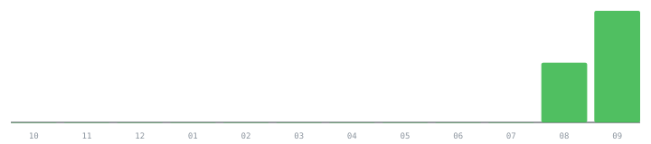

PacketForge
Servidor MCP en producción con dashboard multi-proyecto, embeddings de Gemini y rate limiting propio.
Ver en vivo →
Node.js
MCP
Gemini API
bryandero98@portfolio:~$ whoami

Contribuidor open-source · construyo herramientas pequeñas y locales, y voy resolviendo buenos issues por el camino.
49 PRs mergeados en 13 repositoriosEscribo código open-source desde Colombia. La mayor parte de mi trabajo son correcciones y mejoras concretas dentro de proyectos ya existentes — bugs reales, tests que faltaban, endpoints mal validados — y, en paralelo, un puñado de herramientas propias que publico cuando quedan listas para que alguien más las use.
Servidor MCP en producción con dashboard multi-proyecto, embeddings de Gemini y rate limiting propio.
Ver en vivo →Generador local de subtítulos con faster-whisper + ffmpeg. Publicado en PyPI, 140/140 tests en verde.
Herramienta de línea de comandos publicada en npm, con CI verde en 9/9 combinaciones de plataforma/versión de Node.
49 pull requests mergeados, verificables en vivo en GitHub con un clic en cada contador.

Pull requests abiertos esperando revisión del mantenedor, en el momento de publicar esta página.
La forma más directa de encontrar mi trabajo y contactarme es a través de GitHub.